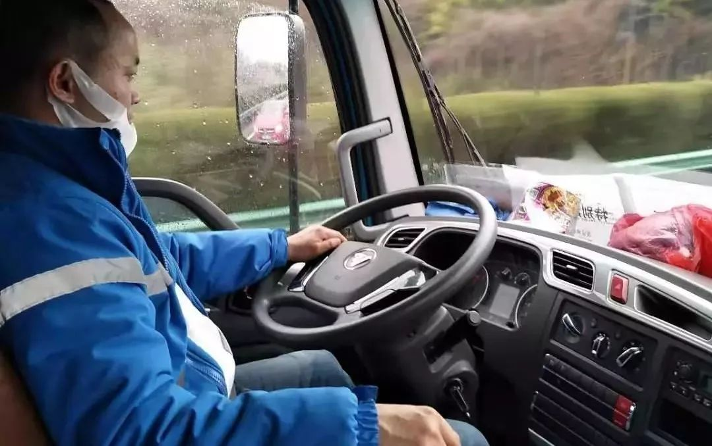
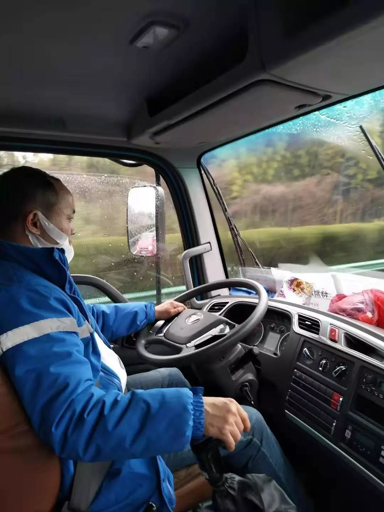
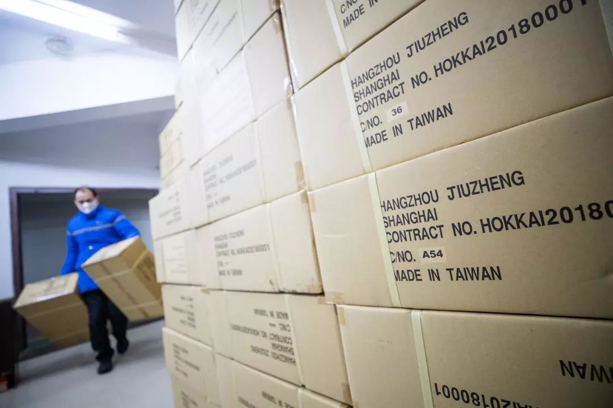
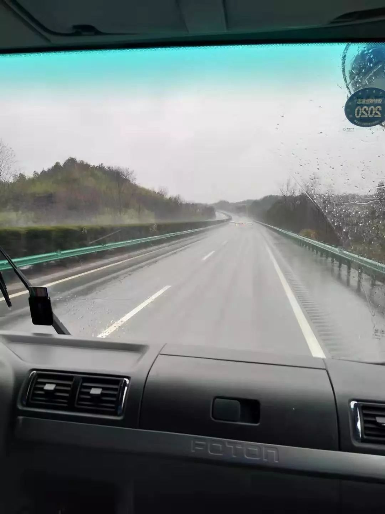
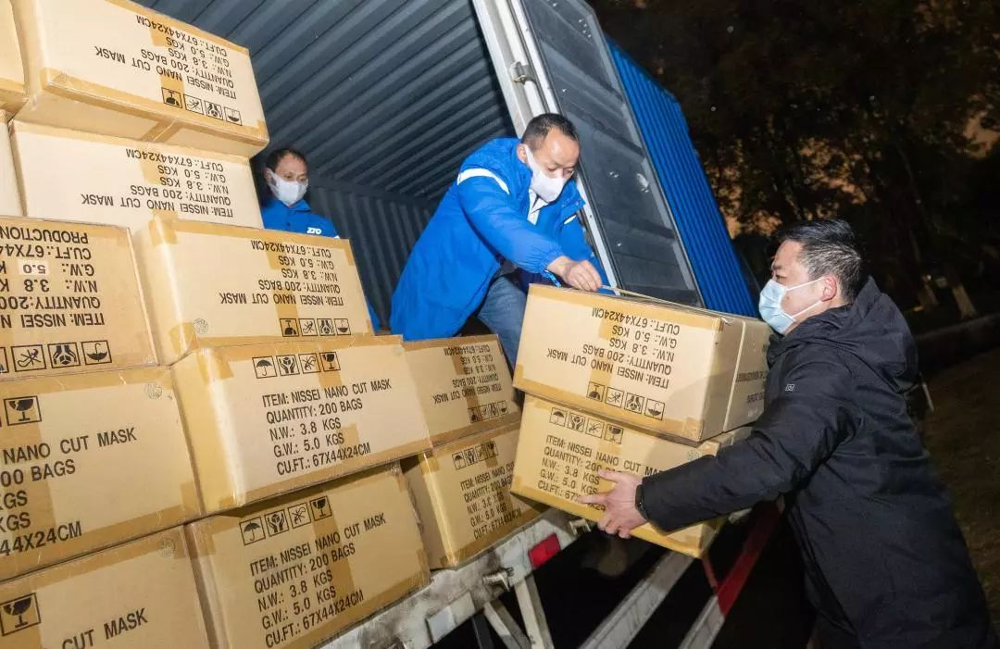

10000个临时发往武汉的口罩
原文链接 备份链接 几位口罩行业的从业者，都是在大量微信、电话疯狂轰炸的间歇，接受我们采访的。所有人的语速都异常急促——在过去的一周时间内，他们接过工信部、各地应急办、市级政府的电话；也接过各省医院、药店、大小代理商的电话；还有从未打过交 …
以下文章来源于卖家 ，作者金斌

49岁的王慎才从未去过武汉，这是一趟完全陌生的旅程，前途未卜。他和这辆满载着口罩的蓝色大货车，将横穿安徽、江西两省，进入肺炎疫情的重灾区湖北，他的目的地是武汉的东西湖区卫生健康局，距离此次肺炎传播的核心重灾区汉口火车站，不过十几公里。
文｜****金斌
编辑｜****屠雁飞
农历庚子年，初一正午12点多，安徽宁国的中通快递货车司机王慎才接到经理的电话，要他送一批救灾物资去武汉。
老王感到很突然，他刚刚从村里的亲戚家串门回来，「舅舅、姑父、小姨家都还没走。」
更何况，目的地是武汉，是疫区。
经理在电话那头没说话。老王问，什么物资？
「十万个口罩。」
「没事，跑一趟就跑一趟。」老王说。
启程
初一下午3点，王慎才坐上了自己的大货车，发动机启动的那一刻，他心里突然有些紧张。
跑了十几年的大货车，大风大浪经过不少，这种感觉却只有非典那一年才有过。那时他被困在宁波，车不让上路，「好几天都躲在宾馆里，真的害怕。」

这是一辆9米6的新车，去年三月份才买，跑了不到十万公里。平时，老王只负责在宁国和芜湖之间跑，一天跑一个来回，忙的时候就跑两趟。去年一直忙到年二十九，下午一点多才拉完最后一趟货。
老王把车子里里外外打理了一遍，干干净净地停到车位上，本想着，怎么也得过完了年，才能跟这个伙伴见面。不曾想，初一就要出车了。
下午5点，王慎才接上副驾驶之后，将货车开到约定的仓库，两个装卸工把十万副口罩装进他的车厢，「挺大的一个仓库，货全都拿完了，空了。」
这十万副口罩的捐赠方说，这批口罩都是日本进口，级别非常高，「都是N100的。」

点货签单时，王慎才突然想起，出门时，只带了点吃的和一件衣服，忘了戴上口罩，他急忙跟仓库要了几个，耳朵上挂一个，剩下的塞在仪表台上。
一个装卸工问他，货送哪儿？
老王也不隐瞒，说是送武汉的。
装卸工「哦」了一声，从兜里掏出半包烟塞给他说，去那边，注意安全。
从宁国出城上高速时，王慎才瞄了一眼时间，时间刚好走过下午6点。他轻轻地踩下油门，福田大货车发出低沉的声浪，码表指针缓缓地转动起来。
49岁的王慎才从未去过武汉，这是一趟完全陌生的旅程，前途未卜。他和这辆满载着口罩的蓝色大货车，将横穿安徽、江西两省，进入肺炎疫情的重灾区湖北，他的目的地是武汉的东西湖区卫生健康局，距离此次肺炎传播的核心重灾区汉口火车站，不过十几公里。
在车上，他想了很久，最后还是决定跟老婆坦白。老婆只说了一句话，把自己保护好。
车往湖北开
王慎才每天都会跑高速，对高速很熟悉，但这次一上去，就感觉跟平时不太一样。
「路上的车比较少，小车多一点，货车只有一两辆，极少，比平时少很多。」平时送快递，他也是傍晚六七点左右上高速，「大货车少了很多很多。」
车少，路况不错，老王心里估算了一下，大概八个小时能到武汉。
他们在宣城的一个服务区加了点油，吃了泡面。在那里，王慎才第一次看到了戴口罩的人，「加油的员工都戴着口罩，店里卖东西的人，全都戴口罩。」他本来习惯在等加油时，跟工作人员随便聊两句，但这次所有人都戴着口罩，除了加油必要的几句交流，「都特别安静。」
他也只好加完油，赶紧离开。

第二天凌晨2点多，王慎才看到了湖北的省界。他赶紧叫醒了身边的同伴，提醒对方戴起口罩。
说来也奇怪，49岁的王慎才，跑物流天南海北走了不少地方，却从来没到过湖北，这里甚至还是他的祖籍所在。
十几岁的时候，湖北老家有族人来到安徽宁国，找到老王的爷爷、父亲一支，补进来族谱当中，那时候他才知道，自己老家竟然是湖北的。父亲告诉他，早年湖北人下江南，父亲就跟着长辈们，挑担子走路，来到宁国。他的父亲已经八十多岁了，只告诉他老家在湖北的大悟县。「大悟属于哪个市？」王慎才想了半天，也没想起来。
其实，王慎才的大货车正在全速前往湖北时，他的老家，湖北省孝感市大悟县新型冠状病毒肺炎防控指挥部就发出公告，表示防控物资采购十分困难，公开接受爱心捐赠，所需物资包括医用口罩、防护服、鞋套、医用乳胶手套、医用隔离服、医用消毒液等等。
凌晨4点，大货车下高速，在出口处，被交警拦了下来。
看着远处招手示意靠边，用防护服全副武装的交警，驾驶室里的两个人不约而同地屏住了呼吸。「也不是害怕，就是觉得，终于到了那个疫情很严重的地方。」
下车前，副驾驶冷不丁丢出一句话：「咱们一回宁国，会不会马上被隔离？」
穿行在深夜的武汉城
武汉下着不小的雨水，很冷。
高速下口静得吓人，四下无人无车，远处的警示灯一闪一闪，才让人略微觉察出笼罩在这座城市上空的紧张与不安。
一个戴着口罩和帽子、穿着像雨衣一样的黄色防护服的交警过来询问，得知是送口罩的，很快做了登记，开出一张特别通行证，便放行了。临走时，对方跟他们说了句「辛苦了」，王慎才第一次对交警有了好感。
这辆9米6的大货车径直开进了武汉的主城区，这或许是这辆车唯一一次有幸能在大城市的主干道上行驶了。
他把车速放慢下来，开得特别小心，偶尔压到井盖，发出的响声，都会让他心头一震。他看了眼车窗，确认是紧闭的，才稍稍安心一些。
但他们很快在空荡荡的街头迷路了。
在这意料之外多出来的一个多小时中，王慎才和同伴「不紧张是不可能的」，他们俩都在默默地关注着，这座已经刷爆全国的城市。车子非常少，路上没有什么人，超市倒是开着的，他们看到几个环卫工人，在冒雨扫地，都戴着口罩。
这时，有一块儿开货车的同事打通了他的电话，「别人都在往外跑，你们怎么还往里去？」
王慎才告诉他，车已经到武汉了，「没有外面感觉的那么严重啊，都很寻常。」
早上四点多，货车到达收货地点。
武汉市应急指挥中心办公室的一个负责人下来迎接。看着一群戴着口罩的人涌上来，王慎才和同事才突然心生紧张，不自觉地退了一步，「连保安都戴着严严实实的口罩。」

那个四十多岁、戴眼镜的负责人一面跟他们说着辛苦了，一面大声招呼一群同事，将货车上的口罩飞快地卸下来。
王慎才这个时候才知道，自己拉的口罩是由菜鸟网络组建的「武汉救援物资绿色通道」第一单发往武汉的物资。
1月25日，菜鸟联合海内外物流企业发布公告，正式开通国内及全球绿色通道，免费从海内外各地为武汉地区运输社会捐赠的救援物资。各捐赠机构可以拨打菜鸟武汉物资捐赠免费运输热线400-900-5656联系。
这条绿色通道在公布后的短短16个小时，截至1月26日上午10时，就接到全球数百家企业、机构、团体的电话接洽捐赠需求，涉及的救援物资包括口罩、检测试剂盒、护目镜、防护服、乳胶手套、消毒液双氧水、照明设备等。
捐赠不仅来自国内，海外捐赠方包括美国、英国、日本、韩国、泰国、菲律宾、迪拜的企业捐赠、民众众筹捐赠、留学生集资捐赠等。
王慎才抽空给老婆发了一个信息，告诉她，「没事，好得很，安全得很，马上就能返程。」
不受欢迎的人
十万个口罩顺利送达武汉那一刻，王慎才的任务便宣告完成，但对他而言，接下来将面临许多可以预想到的局面。
当他还在回程途中时，已经接到五六个亲戚朋友的电话，「询问武汉的情况，是不是电视上说的那么严重，我说没什么事，没什么大不了的。」
王慎才理解他们的不安。一个正在从武汉回来的货车司机，在眼下这个草木皆兵的时刻，不可能不成为重点关注的对象。
村里已经有人发信息过来，让他不要回家了，等疫情控制好了再回去，都是一个村里的左邻右舍。「我说，你们没到那边去看，去过之后就会知道，没那么严重，就是你们怕死。」不过，王慎才也说，接下去一段时间，估计要在家里自我隔离了。
「去武汉送货，那是一方有难、八方支援。回家了，得替家乡人考虑。」

人到中年，他的确有一大家子要顾。他有两个女儿，大女儿26岁，成了家，有个小孩子，小女儿十几岁，还有老父母健在。今年的年夜饭一家老小，跟兄弟四个一块儿吃，四代人坐了满满两桌，一大锅辣味羊肉，热热闹闹。「不用乡亲们提醒，我自己都不可能出门。」
「希望大家都能跨过这个坎，我呢，回家自我隔离，我有这个自觉，一定不给大家添麻烦。」王慎才说。

文章已于修改
原文链接 备份链接 几位口罩行业的从业者，都是在大量微信、电话疯狂轰炸的间歇，接受我们采访的。所有人的语速都异常急促——在过去的一周时间内，他们接过工信部、各地应急办、市级政府的电话；也接过各省医院、药店、大小代理商的电话；还有从未打过交 …
原文链接 备份链接 作者 | 马关夏 出品｜深网·腾讯小满工作室 欢迎下载腾讯新闻APP，阅读更多优质资讯 这个春节，湖北武汉等地陆续发生新型冠状病毒感染的肺炎疫情牵动人心，面对严峻的防控形势，社会各方纷纷行动、驰援武汉。企业、明星捐钱捐 …
原文链接 备份链接 医疗防护资源不足是常态，各地资源调配需平衡，“灯下黑”区域渐次光亮，但少数地区的疫情宣传依旧不到位 外地务工返乡者最担忧的问题是年后经济收入断流、地域歧视，担心节后可能无法返工 本文首发于南方人物周刊 文 | 本刊记 …
原文链接 备份链接 正月初二，1月26日，从武汉回潜江第六天。 潜江今日仍无病例确诊。 早上起来，精神不错。昨晚种种郁结一扫而光。 听丁雪的话，加了衣服。原来计划初四左右回武汉，衣物带的少。也低估了潜江的寒冷，无裤子可加了。岳母 …
原文链接 备份链接 离开湖北境内的时候，我百感交集。我的父母和亲友还在那里，他们将会面临什么，谁也不知道。 作为一个去过疫区、带着孩子又成功离开的湖北人，我有责任把这几天的历程客观记录下来，希望能够给诸多还在恐慌中的人多少一些参考意义。 …